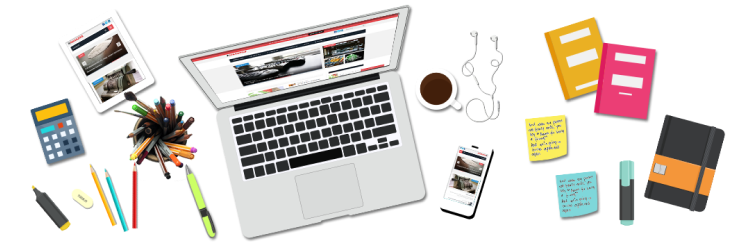
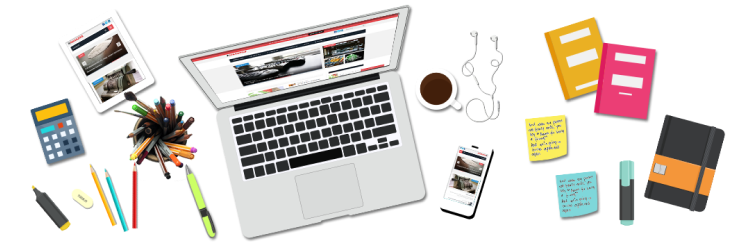

Как обучиться программированию, работая в другой сфере — отвечают эксперты
Нам в редакцию Tproger пришёл вопрос от подписчика, которым мы хотим поделиться с вами:
«Как обучиться программированию, работая в другой сфере?»
Мы обратились за разъяснениями к нашим экспертам, а полученные ответы представляем вашему вниманию.
 
